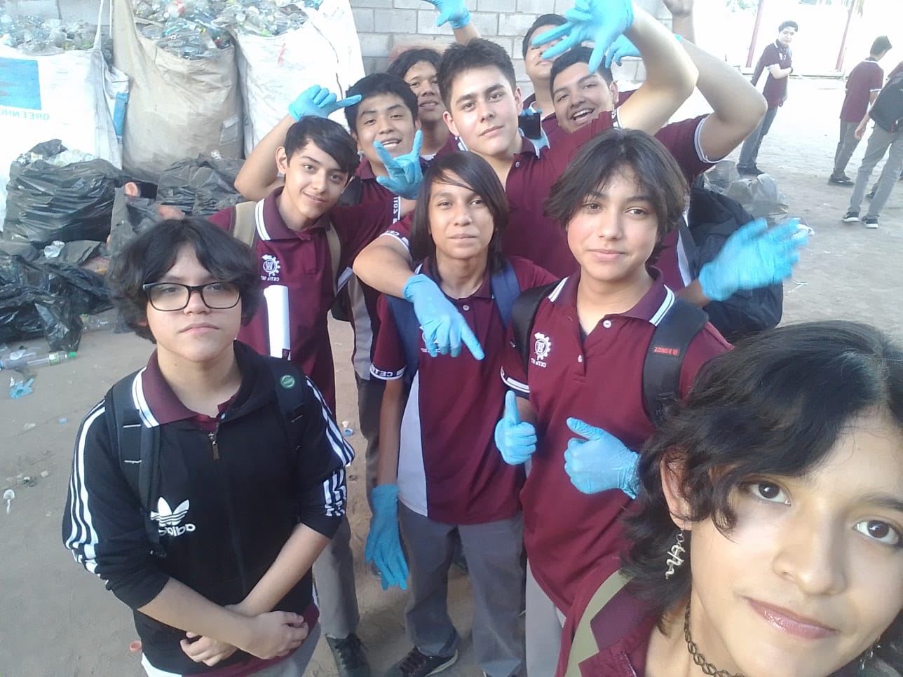

!PROCESO DE RECOLECCION!
[ INFORMACION DEL PROCESO DE RECOLECCION ]
¡El proceso de recoleccion es realizado para acumular la mayor cantidad de PET posible para su posterior reutilizaje, a su vez del empleo de las tapas para el mismo fin!

¡Este mismo proceso, es realizado tanto en escuelas, como en comunidades, en la imagen se aprecia el proceso de reciclaje del pet por parte del 2AVP en CETIs 107!
¡La importancia de el proceso de reciclaje es reducir la cantidad de recursos consumidos y amortiguar la contaminacion!


¡Sigamos reciclando!
¡VOLVER A LA PAGINA PRINCIPAL!